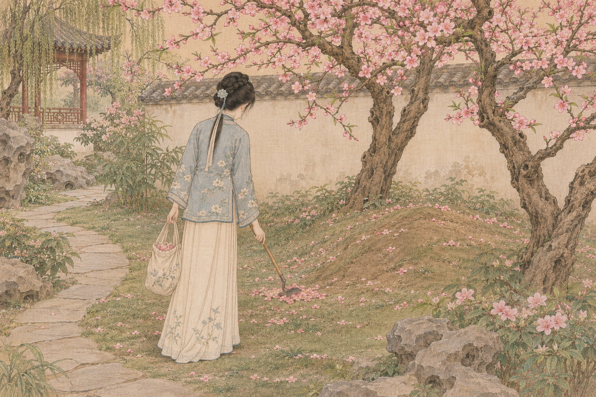
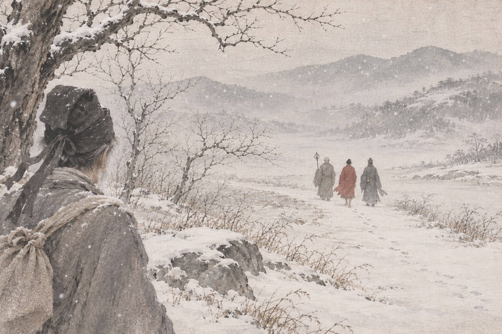

前八十回 · 入梦与入府
石头与失散的女儿
一块未被用来补天的石头向往人间，小说由它所记的经历展开。姑苏乡绅甄士隐资助落魄的贾雨村，女儿英莲却在元宵夜被拐走，家园随后又遭火灾。士隐从安稳生活跌入困境，最终随道人离去；失散的女儿将在另一条命运线上进入薛家。
黛玉进贾府
林黛玉丧母后，由父亲林如海送往外祖母贾母家中。她谨慎观察贾府的礼仪与人情，见到王熙凤，也初次见到衔玉而生的表兄贾宝玉。宝玉听说黛玉没有玉，便摔掉自己的通灵宝玉。亲近感与突如其来的风波，一同成为她寄居生活的开端。
一桩被权势改写的命案
薛蟠为争夺被拐卖的英莲，打死冯渊。受理案件的贾雨村得知贾、史、王、薛四家的权势关联后，徇情枉法，把命案草草了结。英莲随薛家进入新的生活，后来被称为香菱；薛宝钗则随母兄住进贾府，宝黛之外又出现了重要的情感与婚姻线索。
梦中已写下的命运
宝玉到宁国府午睡，在秦可卿房中进入梦境。警幻仙姑引他观看册页、听曲，女儿们的结局以判词和隐喻提前出现，他却无法真正理解。读者因此同时握有两个视角：园中人尚在过眼前的日子，关于离散的预告已经藏在繁华的开头。
刘姥姥第一次叩门
庄户人家遭遇生计困难，刘姥姥带着板儿到贾府求助。她经周瑞家的引见见到王熙凤，得到银钱，暂时缓解家中的窘迫。她以府外人的眼睛看见豪门的排场，也与凤姐一家结下一份往来；这次微小的接济，到贾府败落后才显出长远的回响。
前八十回 · 繁华正盛
秦可卿之死与盛大丧事
秦可卿去世，贾珍为丧事大肆铺张，并请王熙凤协理宁国府。凤姐整顿人员、规矩和开支，显示出精明强干的管理能力。华贵的棺木、冗繁的仪仗与争相露脸的人群，使死亡也成了家族展示地位的场合；繁盛之中，财力与秩序的隐患已经露出。
权力伸向府门之外
办理丧事期间，凤姐接受净虚请托，借贾府名义干预张家婚事。她得到酬金，被强行拆散的婚姻却造成悲剧。凤姐的手腕能够使事情迅速办成，也能够把他人的生活压缩成一笔收益。豪门日常与地方官场的相互支撑，在这件事里变得具体。
元春晋封，园林兴建
贾元春晋封贤德妃，家族上下把这看成新的荣宠。为迎接省亲，贾府耗费人力财力修建别院，亭台、花木与匾额逐渐齐备。宝玉随父亲游园题名，才情受到检验。后来承载少年生活的大观园，最初是家族为宫廷仪典搭建的华丽空间。
省亲之夜
元春乘仪仗回府，在新园中与亲人相见，亲情重逢却受繁复礼制和有限时间约束。众人献诗，园林得到命名，贾府的排场达到显眼的高处。元春既感叹奢费，也为不能自在团聚而伤感；盛典退场后，这座园子才慢慢有了另一种较为亲近的生命。
住进园中，共读西厢
元春命姊妹和宝玉入住大观园。各人的住处让性格与生活有了鲜明的空间，宝玉与黛玉也有了更多相处机会。两人在桃花下共读《西厢记》，借戏文试探情意，随即又因羞恼争执。爱情尚未被公开说明，却已通过阅读、玩笑与在意彼此而日益清楚。

葬花与身世之感
黛玉因怡红院闭门的误会而伤心，独自收拾落花，写下对青春、漂泊和死亡的感受。宝玉听见她吟诵，想到园中人也终将凋零，不禁悲恸。两人后来消解误会，亲近却仍伴着敏感与不安；他们的情感已经超出寻常玩伴的亲昵。

前八十回 · 园中岁月
金钏被逐
宝玉在王夫人房里与金钏说笑，王夫人醒后迁怒金钏，将她赶走。金钏后来投井自尽，府中却很快忙于解释和安排善后。宝玉与宝钗对这场死亡的反应，也显出不同的立场。对主子而言可以被归入一件家务的处置，对丫鬟却可能是无法承受的断裂。
父亲的棍棒
忠顺王府追问蒋玉菡下落，贾环又进谗，把金钏之死牵到宝玉身上。贾政在愤怒与管教焦虑中痛打儿子，王夫人和贾母赶来制止。伤后的宝玉得到众人探望，黛玉与宝钗各以自己的方式表达关切；家族所期待的成材道路，与他的内心生活越发难以重合。
海棠诗社
探春提议结社，李纨主持，宝玉和姊妹们各取雅号，咏白海棠、作菊花诗。诗社让众人的才情、气质与相处方式集中显现：这里既有评比，也有赏识与玩笑。园中女儿们并非只等待婚配与安排，她们此刻共同创造着一套属于自己的文化生活。
刘姥姥再入大观园
刘姥姥带着乡间物产再来贾府，受到贾母留待。宴饮与游园中，她配合凤姐等人逗笑，也把园外的生活带进富贵人家的谈资。她与凤姐的女儿接触，为孩子取名巧姐。贫富、身份与年龄的距离并未消失，一段有温度的交往却在礼物和笑声之间留下来。
生日宴后的泼醋
凤姐生日时撞破贾琏与鲍二家的私情，怒气却也落到无辜的平儿身上。贾琏持剑闹事，最终由贾母调停。热闹的祝寿转成夫妻冲突，平儿在主仆与妻妾的夹缝中承受委屈。宝玉为她理妆，短暂照顾了那个常替别人周旋、很少能替自己说话的人。
香菱学诗
薛蟠外出，香菱得以暂住园中，拜黛玉为师学诗。她从读诗、改稿到苦思入梦，终于写出得到众人认可的作品。远离家务与责打的短暂空隙，让她显出天分和专注。读者由此看见，早年被拐的命运并没有消灭她的感受力，只是长期夺走了施展它的机会。
病中补雀金裘
宝玉不慎烧坏贾母所赠的雀金裘，寻不到能补的匠人。晴雯病中仍勉力熬夜，把破处织补完成，劳累使病势加重。她的伶俐、骄傲与手艺在这一夜集中显现；宝玉珍惜她的本领和情分，却无法保证日后她在府中的安全。
探春理家
凤姐因病暂退，探春与李纨协理事务，宝钗从旁参与。探春不肯让亲疏和奴仆积习压过规矩，又尝试把园中物产交给专人管理，以节省开支并分配收益。改革显出她的胆识，也碰到出身、长幼与既得利益的阻力；能看见弊病，并不等于拥有彻底改变家族的权力。
紫鹃试玉
紫鹃以黛玉将回苏州的话试探宝玉，宝玉当真后陷入严重失常，贾府上下为此惊动。她由此确认宝玉对黛玉的情意，也忧虑黛玉终身尚无着落。情感在危急时得到明证，婚姻却仍掌握在长辈手里，两个年轻人无法仅凭真心决定未来。
群芳夜宴
宝玉生日，丫鬟与姊妹们在怡红院设宴，行花签酒令，笑闹间各人领到与花相关的签语。平日的主仆秩序在这一晚暂时松动，亲近与青春的热烈成为场面的中心。花签又与全书反复出现的命运暗示相连，使欢乐始终带着读者能够察觉的阴影。
前八十回 · 春事将阑
尤三姐的决绝
尤三姐真心认定柳湘莲，柳却因宁国府名声怀疑她的品行，要退还婚约。她以自尽回应这份羞辱，柳湘莲知道误会后痛悔，随后随道人而去。一个女子试图自己选择婚姻，却仍被男子对家门与名节的判断支配，刚烈也未能为她打开出路。
尤二姐吞金
贾琏在外另娶尤二姐，凤姐得知后先以和善姿态接她入府，再借诉讼、流言与内宅关系施压。尤二姐又遭秋桐欺凌，怀孕后失去胎儿，最终吞金自尽。贾琏的悲痛来得太迟；她进入豪门时所依靠的承诺，没有变成能够保护她的地位。
抄检大观园
绣春囊引发风波，王夫人准许抄检园中丫鬟的物件。探春拒绝任人搜辱自己，直指家族从内部毁坏的危险；惜春则把入画逐出，力求与宁府切割。原本承载诗社和日常亲密的园子，被猜疑、告密与身份惩罚重新划分，离散由此加速。
晴雯之死
王夫人听信关于晴雯的坏话，在她病重时将她逐出。宝玉偷偷探望，晴雯把贴身物件交给他，不久便死去。宝玉听小丫头说她成了芙蓉花神，作诔文寄托悲痛。那个曾在病中为他补衣的人，最终没有得到应有的照顾，她的清白也无法在惩罚发生前被听见。
迎春误嫁
贾赦把迎春许给孙绍祖，贾政劝阻无效。婚后迎春回府哭诉丈夫的暴虐，贾家却把婚后承受看成女子既定的命运，难以给她真正保护。她在园中一向退让，这种性格并没有换来安稳；一次由长辈决定的婚配，把她从熟悉的姐妹中送进了更危险的生活。
香菱受辱，前八十回收束
薛蟠娶夏金桂后，香菱遭到改名、诬陷与责打。宝钗把她带到身边，暂时使她避开冲突，身体和生活却已受到损害。与学诗时的专注快乐相比，这段内宅生活显得格外逼仄。此处是现存前八十回的收束；后面的命运按一百二十回本另行叙述。
后四十回 · 失玉与婚变
通灵宝玉失落
后四十回中，怡红院海棠反常开花，众人争论是喜兆还是异兆；宝玉的通灵宝玉随后失落，他的精神也日益失常。贾府一面寻找玉，一面试图用婚姻等安排使他恢复。少年与家族的命运在此交缠，过去象征天赋与宠爱的宝物，变成了全家焦虑的中心。
元春病逝
元春在宫中去世，贾府失去了一项重要的荣宠来源。家人忙于丧仪，也为宝玉失玉后的痴病奔走，喜事可以冲散灾病的想法逐渐推动婚事。省亲时的显赫与此时的无力形成呼应：宫廷恩荣曾抬高贾家的地位，却不能替家族永久抵挡衰败。
焚稿与成婚
凤姐等人安排以宝钗成婚，却让痴病中的宝玉以为新娘是黛玉。黛玉得知消息，焚毁诗稿与旧物，在病中死去；宝玉成婚后才明白真相。通行本把婚礼与死亡并置，使两人的情意终止在无法互通的消息中。宝钗进入婚姻，也没有得到她所期待的完整生活。
探春远嫁
贾政在外任上议定探春婚事，家中开始准备远嫁。宝玉感伤姐妹离散，探春仍须按家族安排离开熟悉的园子。她曾试图整顿家务、挽救积弊，最终能做的却是带着才识进入另一户人家。临别的伤感并没有改变议定的亲事；离开之后，大观园又少了一位能够主持事务的人。
金桂的毒计反噬
夏金桂继续折磨香菱，设法下毒，事情却发生反转，最终自己中毒身亡。薛家陷入新的混乱，既有命案也有薛蟠的诉讼需要应对。香菱暂时摆脱迫害，并不意味着早年的创伤就此消失；这一家的兴衰，从开头被权势遮掩的命案一路延续到内宅灾祸。
抄家与散财
查抄落到贾家，贾赦、贾珍等人的罪责牵动两府，家产、身份和原有的威势都受到打击。贾母拿出私蓄支撑家人，贾政面对往日未能掌握的账目和人事。昔日体面已经难以维持，衰败从平日的亏空与恐慌，变成了家族必须承受的公开事实。
迎春亡故，湘云夫病
迎春被孙绍祖折磨致死的消息传来，园中姐妹的命运不再只是离家和远嫁。贾母惦记湘云，探望的人又得知她的丈夫染上重病，湘云无法分身前来。曾在诗社和夜宴中活泼明亮的少女，如今各自被婚姻、疾病与家庭责任推向分散的生活。
后四十回 · 人散梦归
贾母去世
贾母在家族连续受挫、儿孙各有伤痛时去世。她曾用威望与偏爱维系大家庭，此时连丧事的体面也要在财力不足和人心涣散中勉力维持。凤姐带病承办，却再难像协理宁府时那样从容。家族失去的不仅是一位长辈，也是一处最后能使众人暂时聚拢的中心。
鸳鸯殉主，妙玉被劫
贾母死后，鸳鸯自尽殉主；此前被她拒绝的婚姻压力与对未来的恐惧，随着主人的死亡重新逼近。送殡期间府中又遭盗窃，盗贼随后闯入栊翠庵，把妙玉劫走。妙玉被带出城后去向不明，府中又添了一桩无力追回的伤痛，昔日园林已难保护其中的人。
凤姐临终托孤
凤姐病势沉重，刘姥姥来探望，她把巧姐的安危托付给这位曾受自己接济的老人。过去能够调度两府、操纵诉讼的能干人，此时连女儿的将来也难由自己掌握。凤姐随后去世，平儿与巧姐留在身后，早年的恩与怨开始以另外的方式结算。
惜春选择出家
经历抄检、亲人死亡和府中盗劫，惜春决意离开原有生活。家人劝阻，她仍不肯改变，后来在家中修行，紫鹃相伴。她早已对宁府的污浊与家族牵连保持警惕，如今这种疏离成为实际选择；园中的聚会、画笔与姐妹情分，都被留在另一段生活里。
巧姐脱险
凤姐去世、贾琏不在时，巧姐的亲属盘算出卖她的婚姻，平儿及时向刘姥姥求援。刘姥姥把巧姐带到乡间避祸，等到贾琏归来再使事情得到安置。曾被豪门视作笑料和远亲的乡下老人，此时成了最可靠的援手，早年留下的一份善意终于保护了孩子。
中举之后离去
宝玉与贾兰应试并中举，却在出场后失踪。家人原盼他以功名修补家道，得到的却是他的离开。贾政后来在途中见到披着大红猩猩毡斗篷的宝玉，他行礼后随一僧一道而去。婚姻、父子之情与仕途前景，都没有让他重新留在原来的生活中。

留下的人继续生活
宝玉离去后，宝钗仍需面对婚姻留下的空缺；袭人由王夫人安排出嫁，嫁给蒋玉菡，才发现彼此早有宝玉所赠汗巾的联系。香菱在金桂死后虽被扶正，最终仍因难产死去，留下一个孩子。通行本的收束没有使所有女儿得到补偿，她们的道路也并不相同。
石头返本，故事留下
贾雨村再遇甄士隐，听见关于宝玉、香菱和贾府后事的解释。通灵宝玉被僧道带回青埂峰，空空道人再抄石上的经历，使故事回到开篇的框架。家族得到部分恢复与延续的可能，已经失去的人却不能回来；这一百二十回至此结束，繁华成为被写下和重新阅读的往事。
没有找到匹配的节点，请换一个词试试。
关于这份导读
通行一百二十回本：前八十回与后四十回分段标明，包含结局剧透。
这是一份按叙事阶段整理的原创导读，不替代原著。小说没有一套可无争议换算的公历年表，故以章回和故事阶段定位。前八十回与后四十回在页面中分别标明；后四十回的刊行与作者问题存在争议，本页只说明通行一百二十回本实际写出的结局，不将脂批推测、后世续书或影视改编混入正文。
- 《红楼梦》一百二十回汇校本文本及目录 ↗ · 正文说明前八十回以庚辰本为底本，后四十回以程甲本为底本；本页为原创情节概述，不转录小说全文。
- 程甲本版本与刊印说明 ↗ · 1791年程伟元、高鹗刊行的120回本；后四十回的作者与原稿来源存在研究争议。
- 《红楼梦》第1回原文 ↗ · 前八十回文本
- 《红楼梦》第2回原文 ↗ · 前八十回文本
- 《红楼梦》第3回原文 ↗ · 前八十回文本
- 《红楼梦》第4回原文 ↗ · 前八十回文本
- 《红楼梦》第5回原文 ↗ · 前八十回文本
- 《红楼梦》第6回原文 ↗ · 前八十回文本
- 《红楼梦》第13回原文 ↗ · 前八十回文本
- 《红楼梦》第14回原文 ↗ · 前八十回文本
- 《红楼梦》第15回原文 ↗ · 前八十回文本
- 《红楼梦》第16回原文 ↗ · 前八十回文本
- 《红楼梦》第17回原文 ↗ · 前八十回文本
- 《红楼梦》第18回原文 ↗ · 前八十回文本
- 《红楼梦》第23回原文 ↗ · 前八十回文本
- 《红楼梦》第27回原文 ↗ · 前八十回文本
- 《红楼梦》第28回原文 ↗ · 前八十回文本
- 《红楼梦》第30回原文 ↗ · 前八十回文本
- 《红楼梦》第32回原文 ↗ · 前八十回文本
- 《红楼梦》第33回原文 ↗ · 前八十回文本
- 《红楼梦》第34回原文 ↗ · 前八十回文本
- 《红楼梦》第37回原文 ↗ · 前八十回文本
- 《红楼梦》第38回原文 ↗ · 前八十回文本
- 《红楼梦》第39回原文 ↗ · 前八十回文本
- 《红楼梦》第42回原文 ↗ · 前八十回文本
- 《红楼梦》第44回原文 ↗ · 前八十回文本
- 《红楼梦》第48回原文 ↗ · 前八十回文本
- 《红楼梦》第49回原文 ↗ · 前八十回文本
- 《红楼梦》第52回原文 ↗ · 前八十回文本
- 《红楼梦》第55回原文 ↗ · 前八十回文本
- 《红楼梦》第56回原文 ↗ · 前八十回文本
- 《红楼梦》第57回原文 ↗ · 前八十回文本
- 《红楼梦》第63回原文 ↗ · 前八十回文本
- 《红楼梦》第66回原文 ↗ · 前八十回文本
- 《红楼梦》第68回原文 ↗ · 前八十回文本
- 《红楼梦》第69回原文 ↗ · 前八十回文本
- 《红楼梦》第74回原文 ↗ · 前八十回文本
- 《红楼梦》第77回原文 ↗ · 前八十回文本
- 《红楼梦》第78回原文 ↗ · 前八十回文本
- 《红楼梦》第79回原文 ↗ · 前八十回文本
- 《红楼梦》第80回原文 ↗ · 前八十回文本
- 《红楼梦》第94回原文 ↗ · 后四十回文本；结局仅按本版本叙述
- 《红楼梦》第95回原文 ↗ · 后四十回文本；结局仅按本版本叙述
- 《红楼梦》第96回原文 ↗ · 后四十回文本；结局仅按本版本叙述
- 《红楼梦》第98回原文 ↗ · 后四十回文本；结局仅按本版本叙述
- 《红楼梦》第100回原文 ↗ · 后四十回文本；结局仅按本版本叙述
- 《红楼梦》第103回原文 ↗ · 后四十回文本；结局仅按本版本叙述
- 《红楼梦》第105回原文 ↗ · 后四十回文本；结局仅按本版本叙述
- 《红楼梦》第107回原文 ↗ · 后四十回文本；结局仅按本版本叙述
- 《红楼梦》第109回原文 ↗ · 后四十回文本；结局仅按本版本叙述
- 《红楼梦》第110回原文 ↗ · 后四十回文本；结局仅按本版本叙述
- 《红楼梦》第111回原文 ↗ · 后四十回文本；结局仅按本版本叙述
- 《红楼梦》第112回原文 ↗ · 后四十回文本；结局仅按本版本叙述
- 《红楼梦》第113回原文 ↗ · 后四十回文本；结局仅按本版本叙述
- 《红楼梦》第114回原文 ↗ · 后四十回文本；结局仅按本版本叙述
- 《红楼梦》第115回原文 ↗ · 后四十回文本；结局仅按本版本叙述
- 《红楼梦》第118回原文 ↗ · 后四十回文本；结局仅按本版本叙述
- 《红楼梦》第119回原文 ↗ · 后四十回文本；结局仅按本版本叙述
- 《红楼梦》第120回原文 ↗ · 后四十回文本；结局仅按本版本叙述
图片为依据情节生成的 AI 概念插图，人物外观与未明确规定的建筑细节属于视觉想象。